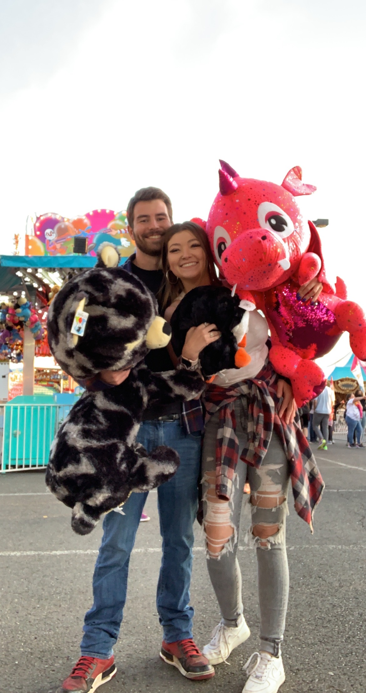

Hey there! My name is Alan Christopher Monkman and I am designing this web page to tell you a little about myself. I am a 26 year old man who lives in the city of Lynnwood, just North of Seattle Washington. Originally I am from a smaller town called Kenmore that is right off of Lake Washington. After graduating high school I moved around a-lot and worked several different blue-collar jobs. Mostly labor or more recently, delivery jobs. I am a huge nerd! I really enjoy video games and anime, and I've wanted to get more into board games as well. When the Seattle weather allows it, I love to go hiking, fishing, camping or anything of the sort. I want to travel much more once I am financially stable, I spent a month in Vietnam and enjoyed every minute of it. Now I am choosing to go back to school in the form of Code Fellows. It is a very new experience for me going to school as an adult but I am really enjoying it so far. Thanks for checking out my page!
My goal is to make it through Code Fellows and become a successful software developer. I would like to be able to not only play the video games I love, but help develop them as well!